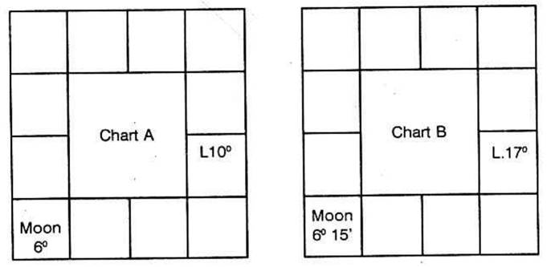
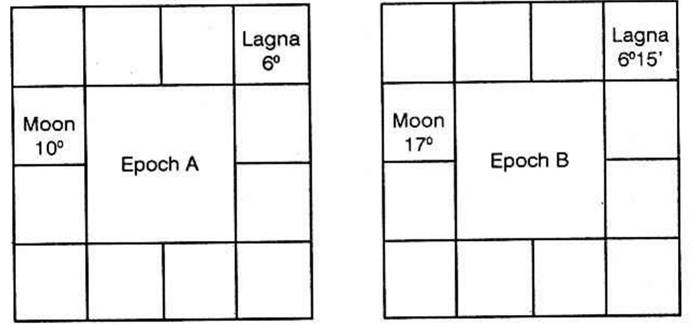
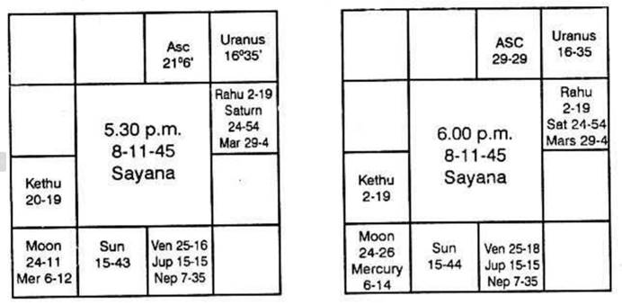
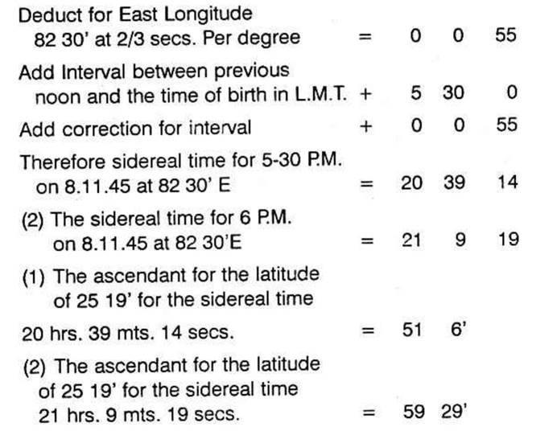
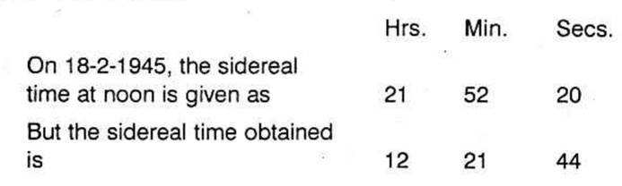
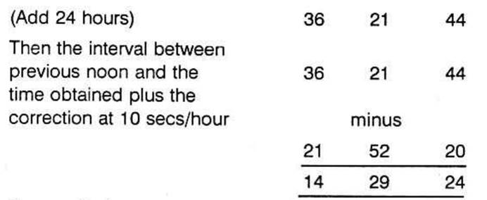
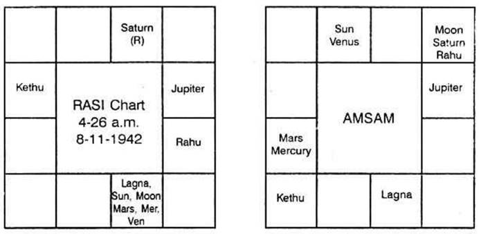

When one is doubtful about his exact time of birth, but says that it may be around 15 minutes this way or that, is there any method by which one can find out the exact moment of birth?
I shall give some of the methods which are available. How far you can rely on them, is left entirely to you, to the readers and to the research scholars.
(1) Convert the approximate time of birth given in I.S.T., to Vighatis after Sunrise (Sunrise will be given in L.M.T. convert to I.S.T.). Multiply by 4 and divide by 9. The remainder is the number of the star counted from Aswini, Makham or Moolam. Suppose Sun rises at 6 A.M. Birth is at 8 A.M. That is the birth took place 2 hours after Sunrise.
1 Day = 60 Ghatis = 3600 Vighatis
1 Hour = 2 ½ Ghatis = 150 Vighatis
1 Ghati = 24 Min. = 60 Vighatis
1 Minute = 2 ½ Vighatis
1 Vighati = 24 Seconds.
If the birth is 2 hours after Sunrise then it means it is 5 Ghatis = 300 Vighatis.
Multiply by 4 and divide by 9
Then （300×4）/ 9 = 1200 / 9 = 133 ⅓
Remainder is 3. That is, it means that Moon at the time of birth should be in the Nakshathra which is the 3rd from Aswini or Makham or Moolam i.e., it may be Karthikai or Uthrapalguni or Uthrashada.
But, suppose the star is Chithra, then one is to find out that Vighati, next to the number of Vighatis given by consultant.
He mentioned 8 a.m. = 300 Vighatis after sunrise. So you should add or subtract 1 Vighati or 2 or 3 and so on till you get the remainder 5 which shows the three stars Mrigasirish a, Chithra and Dhanishta.
Therefore if one is born at 305 Vighatis or 296 Vighatis, the remainder after multiplying by 4 and dividing by 9 will be only 5. But the person says that it may err to a maximum of fifteen minutes either way. Then find how many Vighatis will yield the same result.
The following Vighatis will give the remainder 5.
278; 287; 296; 305; 314; 323; 332; 341 and so on.
278 Vighati is after 7.45 A.M. and
341 Vighati is before 8.15 A.M.
Which will you give?
(2) Another method mentioned is as under --
Note where Mandi was at the time of birth. The Lagna sign will be either 5 or 7 or 9 or 1 when counted from the sign occupied by Mandi – (Then alternatives are given – either to Moon or Lagna, either in Rasi or Navamsa).
If Mandi and Lagna are to be in 1, 5, 7 or 9 the consultant asks, why then the same author gives the results of Mandi occupying any house from Lagna. I.e., the first, second, third, fourth etc., up to 12.
How to reconcile?
If the sign is to be either 5 or 9 (for example) it can be useful to find the Lagna, correct to 30.
If Navamsa is taken, the position of Lagna is correct to 3°20′. As the Navamsa Lagna changes roughly once in 13 or 14 minutes, how far will this calculation give a precise answer?
(3) In Uthra Kalamrita, it is said that the interval between Sunrise and the time of birth is to be converted into Vighatis.
Divide by 225.
Then males are born if the remainder is between 0 and 15; or 45 and 90; or between 150 and 225. Females are born if the remainder is between 15 and 45 or between 90 and 150.
“According to this method, we have to multiply 53 ¾ Ghatis by 60 (he has taken the time of birth as 53 ¾ Ghatis) to convert them to Vighatis, thus 53 ¾ × 60 or 215 × 15. This has to be divided by 225. Thus, 215 × 15 divided by 225 gives a quotient of 14 and remainder of 75. This falls with in second Group (45 to 90) which shows that the sex is ‘Male’.
In the first example taken, when a first principle is applied, the birth may be between 278 and 341 Vighatis. So the remainder may be 53 or 62 or 71 or 80, or 89 or 98 or 106 or 115. So if the consultant is male (presuming that the horoscope belongs to the consultant) then 55; 62 or 71; 80 will be one of the timings. If the consultant is a lady, then the number of Vighatis will be 98 or 106 or 115 when both the rules 1 and 3 will be satisfied.
(4) Pre-natal-Epoch.
Much is said about this. Very briefly let me state how it is not useful to one and all. Suppose two persons are born with the Ascendant and Moon as shown below, say they are born at an interval of 30 minutes on the same day.

According to the rules, find where Lagna and Moon at the time of Epoch to A and B are. Moon is passing 10° and 17 in Aquarius, on the same day, which is the position of Moon on the day of Epoch.

What is the rule, find out the exact time on the day of epoch when Lagna for A will be Gemini 6 and for B Lagna will be Gemini 6°15′.
It can be only one minute.
If the Lagna of Epoch were to be, say 2 P.M. to A, then for ‘B’ it will be only 2-01 P.M.
Now we have to calculate where Moon would be, on the day of epoch, for A at 2 P.M. and for B at 2.01 P.M.
It is more or less the same position; probably it moves by 0.5 minute.
So, in the Epoch Chart it is worked out and found that when Gemini 6 rises, on the day of Epoch, Moon was actually in 13°15′40″.
Whereas for B, when the ascendant is in 6°15′ Moon was in 13°16′20″.
Now, we have to take that, for ‘A’ in his horoscope, the Lagna should be 13°15′40″ and for the chart B, Lagna is 13°16′20″.
Think, awhile. If one’s Lagna on a particular day is 13°15′40″ and the other’s Lagna on the same day is 13°16′20″ what should be the interval between one’s birth and the other. It can only be two minutes. But what is the actual interval, 30 mts. Then how far we can boldly declare this to be a method for rectification is to be judged by the readers.
Let us take two births actuals.
In a hospital on 8-11-1945 there were two births. One child was born at 5.30 P.M. the same nurse went to the next room and attended upon another lady and another child was born at 6 P.M. on 8-11-1945. Both want to find out the correct time of birth by applying Prenatal Epoch.
The horoscope of the child born at 5.30 P.M. on 8-11-1945 at 25°19′ N and 82°30′ E and that of the other at 6 P.M. in the same hospital are as under:

(1) Sidereal time at Noon on 8-11-45 = 15 hours 9 min. 14 secs.

A couple may have pleasant time every night. Yet, one cannot say which night function would have been fruitful. The day itself is not definite. Further, the male spermatozoa can enter into female ova at any time after copulation within a period of 38 hours. Therefore at which moment, the epoch commences nobody can say, even though one knows the period of few minutes of pleasure.
Generally, from the time of epoch, the growth commences and the intra-uterine life will be around nine months, i.e. nine solar months or ten lunar months.
1. There may be an increase or decrease in this period. It is found that it depends upon four factors i.e. (a) whether Moon was waxing – Sukla Paksha, increasing in light or the longitude between Sun and Moon is increasing from the New Moon; or (b) Moon was waning – Krishna Paksha, decreasing in light or the longitude between Sun and Moon decreasing from the time of Full Moon, (c) whether Moon is found above the horizon, anywhere in the houses 12, 11, 10, 9, 8 or 7; (d) or Moon is found below the horizon, anywhere in the houses 6, 5, 4, 3, 2 or 1.
Then, the period of intra-uterine life in above nine solar months if (a) Waxing Moon, is below horizon (houses 1 to 6) or (b) Waning Moon is above horizon (houses 7 to 12) and it is less than nine solar months if (a) the Waxing Moon is above horizon (houses 7 to 12) or (b) the Waning Moon is below horizon (houses 1 to 6).
II. To find out which sign would have been occupied by Moon on the day of Epoch and which part of the Zodiac will be rising at the time of Epoch one is to follow the following rules.
Suppose, at the time of birth, it was Sukla Paksha, i.e., Waxing Moon, then the Ascendant at the time of Epoch will be the sign and the position of Moon at the time of birth. The day of Epoch is that day on which (around 9 months prior to birth) Moon transited in that sign and around the degree of the Lagna at the time of birth.
In the above examples, Moon gets separated from Sun. New Moon was over. It is increasing in light. It is called Waxing Moon. As the Lagna in the first example is 21°6′. Taurus, 7th cusp will be 21°6′ Scorpio. Therefore Aries, Pisces, Aquarius, Capricorn, Sagittarius and the portion between 30° Scorpio and 21°6′ Scorpio are above the horizon.
Hence the position of Lagna at the moment of Epoch should be 24°11′ Sagittarius (which was the position of Waxing Moon at the time of birth). Further the day of Epoch will be 18th February 1945 (9 months before the birth time) when Moon was transiting around 21°6′ Taurus.
In the second example, the position of Lagna at the time of Epoch will be 24°26′ in Sagittarius (as it was Waxing Moon at the time of birth) and the day of Epoch will be 19-2-1945 when Moon transists 29°29′ Taurus.
III. Find the exact time on the day of Epoch when that part of the Zodiac will rise in the East on the day of Epoch which is the position of Moon at the time of birth.
For this, one is to take the table of houses for the Latitude at which the mother stayed during those pleasant days. Here in these examples, the mother was during the pleasant days and the painful day, all along, in the same place. So from the table of Houses for Latitude 25°19′ note the sidereal time given for the Ascendant in Sagittarius 24°11′ i.e. look down the column ‘Ascendant’. When you come to the 7th line on the right side page, you will find Asc. 24°15′ Sagittarius when the sidereal time would be 12 hours 22 mts. And 2 secs. If you calculate, you will find that 24°11′ Sagittarius would have risen when the sidereal time was 12 hours 21 minutes 44 seconds. Suppose a child is born on 18-2-1945 and you find the sidereal time at the time of birth of a child is 12 hours 21 min. 44 seconds, then what is the actual time of birth.


If you calculate deducting rectification for the interval at 10 secs. Per hour, you will get the figure 14 hours 27 mts. as the interval between previous noon and the time of birth i.e., 2.27 am on 19-2-1945.
Find out the position of Moon at 2-27 a.m. on 19-2-1945 Moon at 2-27 A.M. on 19-2-1945 will be 23°30′ in Taurus.
Similarly if one works for the time on 19-2-1945 when Asc. 24°26′ Sagittarius rises. It will be found that the sidereal time would be 12 hours 22 mts. 50 secs. And the time of birth will be 14 hours 30 mts. 30 secs. added to previous noon i.e., 2-28-5 A.M. on 19-2-1945.
Calculate the position of Moon for this time 2 hours 28 mts. 5 secs. A.M. 19-2-1945. It is 23°36′1″ in Taurus. Therefore the Lagna at the time of birth for one born at 5-30 P.M. is arrived at as 23°30′ Taurus and for the other born at 6 P.M. it is found to be 23°36′1″, as the position of Moon at the time of Epoch is the position of Lagna at the time of birth, if Moon at birth was waxing.
Will this method of rectification be useful?
According to Krishnamurti Padhdhati and the simplest method of multiplying the number of Vigatis from sunrise to the time of birth by 4, dividing the product by 9 and counting the star from Aswini trine will give the exact Vigati.
This method gives confidence, convinces one and proves to be correct.
In Brihat Jataka, written by Varaha Mihira in Chapter 26, there are 17 stanzas to cast the horoscope of a person whose time of epoch (impregnation) and also the time of birth is not known. He gives the method to erect a horoscope from the time of query.
From this, one can understand that the time of birth and the urge to work out and erect the horoscope of a native from the moment of query has a direct bearing. They are inter-linked. There can be no second opinion.
Therefore one is to follow the following method:
(1) Note the lord of the day when the query is answered;
(2) Note the star at that time i.e. the lord of the constellation in which Moon transits;
(3) Find the lord of the sign in which Moon is;
(4) Who is the lord of the Lagna.
These planets will be the same who govern the sign in which the Lagna is, the constellation in it, the sub and the sub sub.
(a) A person wanted to know whether his Lagna is Taurus last degree or Gemini first degree, so that he may know whether Venus or Mercury is the lord of the Lagna. This person visited at 9-5 A.M. on 27-4-1966. The Lagna at the time of query was Gemini owned by Mercury. The day is Wednesday governed by Mercury. Moon is in Punarvasu star ruled by Jupiter. It is in its own sign and is aspected by Mars. Hence Mercury, Jupiter, Moon and Mars are the ruling planets at the time of query.
The doubt is whether it is Venus sign, Mars star, Saturn sub i.e. between 27°-53′-20″ and 30 Taurus or between 0 and 1°-53′-20″ which is jointly ruled by Mercury lord of the sign. Mars is the lord of the constellation and Mercury lord of the sub.
The ruling planets at the time of query having nothing to do with Venus and Saturn. But Mercury and Mars agree. Then what about Jupiter and Moon. As Jupiter is in Lagna at the time of query, take as Jupiter sub sub.
Calculate the time when sub sub of Jupiter will rise on the day of the birth of the native. That is the time of his birth. His Lagna is Gemini and its lord is Mercury. Venus is not the lord. No other rule can categorically eliminate one and correctly give the true Lagna. Is not this method convincing? 32 of my students who are very intelligent tried to put this method to test. They tested on their horoscopes and their children which they know. They are convinced and this is published for the readers to use this method and be benefited.
(3) Another person on 3-5-66 asked whether he is born in Scorpio or Sagittarius. The day is Tuesday ruled by Mars, Moon in Virgo owned by Mercury, the constellation is Chitra governed by Mars; Moon is aspected by Saturn, Mercury and Venus.
The doubt is whether the lord of the sign is Jupiter or Mars. Actually the birth will be at Mars sign, Scorpio, Mercury star Jyeshta Saturn sub between 27°-53′-20″ and 30 Scorpio. It cannot be Sagittarius as the time of query has nothing to do with Jupiter.
Next after finding out the sub, one is to calculate when that sign, constellation and sub will rise in the East on the day of birth and when it will be over.
In the first case, Gemini sign rose in the East 5 Ghatis 16 Vigatis after sunrise i.e. 316 Vigatis after sunrise. Multiply 316 by 4 and divide by 9. 4 is the remainder. Count from Aswini trine. His star in which Moon transited at the time of birth should be, according to this calculation Rohini or Hastham or Sravanam. But his star is Jyeshta. The remainder should be 9. Then you add or deduct one, one Vigati from the time of birth. The nearest one shows the actual Vigati of birth. If you add one to 316, multiply by 4 and divide by 9, balance is 8; if you add one more, balance is 3. If you add one more and do the process remainder is 7 and so deduct one from 316. You get 315. Multiply by 4. The product is 1260. Divide by 9. It goes 140 times which may be taken as 139 times and the remainder is 9 when you count from Aswini trine, it agrees. Therefore, declare that his time of birth was 315 Vigatis after sunrise on that day to that locality.
The above method alone can clearly fix the position of Lagna, give the correct time of birth and convince the consultant.
(An Astrologer has to pray: gain the Divine Grace: develop intuition: but treat this science scientifically: God never fails to guide. He gives the tip to correctly eliminate the incorrect one and select the right one accurately).
Another example to decide time of birth:
During war time, the clocks showed one hour in advance of actual time. A native born in 1942 has got his horoscope correctly erected for his time of birth. But has got the doubt, whether the time taken for erection of horoscope was actual time of birth or the clock time. His horoscope is given below. According to this, the time taken for calculation was 4-26 am (correct time). The clock time might have been 5-26 at the time of birth. The problem is to find out whether the chart below is correct:
Time of birth: 4.26 A.M. on 8.11.42/9-11-42

Note down the time of analysis. It is 7-35 A.M. on 7-4-66. Find out the ruling planets. Since the chart is taken only to find out whether it is correct or not, the ruling planets at the time of analysis should have ruled the birth time also. In other words, the analysis is to find out the birth time only. Hence when the birth occurred, the planets ruling should also rule the moment of analysing the horoscope also; otherwise the horoscope is wrong.
By ruling planets, it is meant as follows:
(1) The lord of the day;
(2) Lord of the star in which Moon transits;
(3) Lord of the sign (Rasi) in which Moon transits;
(4) Lord of the lagna sign or the sign in which the Ascendant transits;
(5) The lord of the star rising in the east i.e. the star, in which the Ascendant transits.
On 7-4-66 at 7.35 a.m., the ruling planets are as below:
1. Jupiter : Lord of the day Thursday
2. Rahu : Lord of the star Swathi
3. Venus : Lord of Libra-Thulam (Rasi) in which Moon was transiting
4. Mars : Lord of the lagna Aries-Mesha
5. Venus : Lord of the star Bharani rising in the east at 7.35 a.m.
Rahu, unaspected by any planet, represents lord of the sign Taurus – Rishaba in which it is posited. Lord of Taurus – Rishaba is Venus. Rahu represents Sun, since it is in the constellation Karthik ruled by Sun on 7-4-66.
Hence, Sun, Mars, Jupiter and Venus should have ruled native's time of birth. The native was born on Sunday ruled by Sun. At 4-26 a.m. on 9-11-1942 (birth day) exact time, the lagna was Libra-Thulam. Star rising was Chitrai. The sign Libra-Thulam is ruled by Venus. The constellation rising is ruled by Mars. Moon was transiting in Visakam star ruled by Jupiter at the time of birth. Hence at 4-26 A.M. exact time on 9-11-1942 the ruling planets were Sun, Mars, Jupiter and Venus.
If the birth were to be at 3-26 a.m. (exact time) lagna would have been in Virgo-Kanni ruled by Mercury, the star rising in the east would have been Hastham ruled by Moon. Since Mercury and Moon do not rule the moment of analysis, the native could not have been born at 3-26 a.m. exact time.
Let us find out whether 5-26 a.m. exact time corresponding to clock time of 6-26 A.M. might have been the birth time. At 5-26 A.M. (exact) the star rising was Swathi ruled by Rahu in the sign Libra-Thulam ruled by Venus. Since Rahu and Venus rule the present moment this could have been the birth time.
Now how to select? Was it 4-26 a.m. or 5-26 a.m. (both) time exact time, when the birth took place?
(1) Find out the lord of the lagna at the moment of analysis. This should have been the sub sub lord rising in the east at the time of birth.
(2) At 4-26 a.m. on 9-11-1942 find out lord of star rising, lord of the sub rising and lord of the sub sub rising. Lord of the sub sub should be Mars (lord of lagna at the moment of analysis) if 4-26 a.m. exact time were to be correct. At 5-26 a.m. on 9-11-1942 (exact time) sub sub lord of the star rising in east was not Mars. Hence the native should have been born at 4-26 a.m. on 9-11-1942 corresponding to the clock time 5-26 A.M. since the clock showed one hour in advance of actual of exact time.